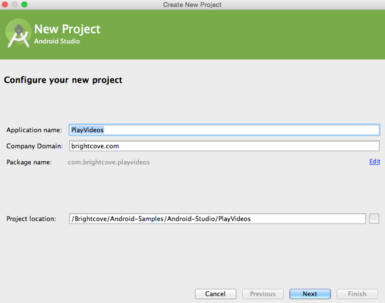
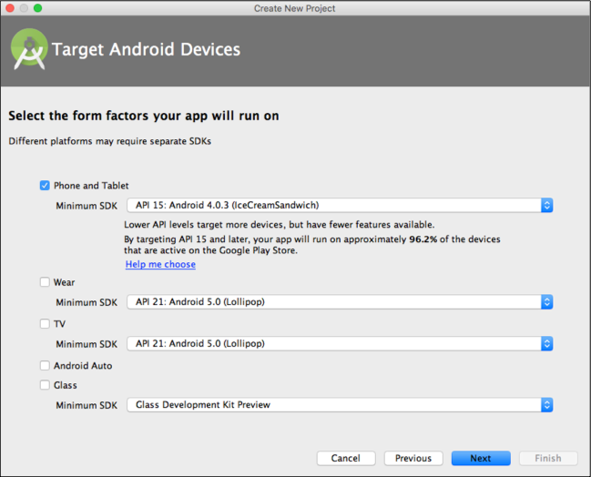
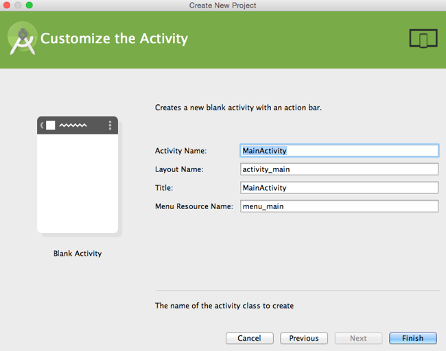
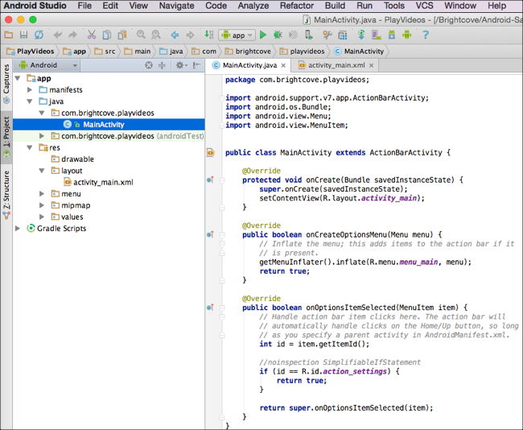
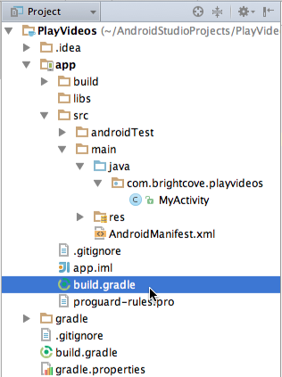
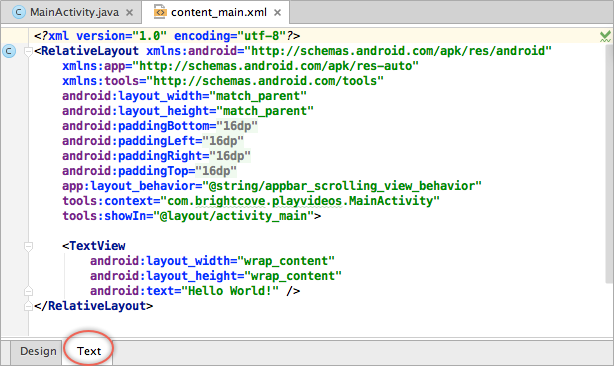

Android Studio - Quick Start to Brightcove Player SDK for Android
In this quick start you will use Android Studio and the Brightcove Player SDK for Android to create an app which plays a video from a Brightcove Video Cloud account and videos from a Brightcove Video Cloud playlist.
In this quick start you will use Android Studio and the Brightcove Player SDK for Android to create an app which plays a single video.
After completing this Quick Start you should be able to:
- Create a project and add the Brightcove Player SDK for Android using Gradle.
- Alter the layout to include a
BrightcoveVideoView. - Add to the
onCreate()method to play videos from different sources. - Add to the
onCreate()method to play videos.
Audience
Developers who use Android Studio for development and are interested in using the Brightcove Player SDK for Android in an Android app.
Prerequisites
- A minimal knowledge of Java and Android app development.
Get ready
Get ready for development by installing Android Studio
- Download the Android Studio application.
- Follow the directions on the pages to install the application.
Create a project
Create a project in Android Studio and then link to the player SDK using Gradle.
Create a project in Android Studio
- Open Android Studio.
- If this is your first time opening Android Studio, select Start a new Android Studio project.
- If you are seeing the menus, select File > New > New Project.
Supply values for the Application Name, Compnay Domain, and Project location. In this quick start the values shown below are used:
- Click Next.
Select the Phone and Tablet platform with the default minimum SDK value.
- Click Next.
- Be sure Blank Activity is selected and click Next.
- Accept the defaults of creating a Blank Activity and click Next.
Accept the defaults for the activity details (see following screenshot) and click Finish.
Android Studio will work for awhile and eventually display the initial state of the project.

Utilize Gradle to link to the Brightcove Player SDK for Android
Expand the Gradle Scripts section and open the second
build.gradlefile, which is associated with the current module in your PlayVideos project.At the bottom of the file, add the
repositoriessection and alter thedependenciessection as shown here:
Code the application
Next, you will write the code to layout the app, build the video list, and play the videos
Define the app's layout
- Open the file
app/res/layout/activity_main.xml. Click Text at the bottom of the file's tab to see the raw XML.
Remove the existing
TextViewsection and add aBrightcoveVideoViewsection so the resulting XML appears as follows. Note for later use theidof the view is namedbrightcove_video_view.
Enable the app to use the Internet
- Open the
app/manifests/AndroidManifest.xmlfile. Just after the
<application>code block, but above the ending</manifest>tag, insert the following to enable Internet access.
Import the appropriate classes
If it is not already open (which it should be), open the
app/java/com.brightcove.playvideos/MainActivity.javafile.Of course, as is standard Android Studio functionality, as you use classes they will automatically be imported. It is suggested you take advantage of this functionality, and not add the import statements in the next step.
Just below the package name, the following list of classes will be added automatically as you run through the rest of this guide. Use this list as a reference for later steps.
Run the application
You are now going to run the application. This is not so you will see any video playing, but it will force a Gradle build. Once this is done, the app will be aware of the Brightcove Player SDK for Android and you will get typing help when entering Brightcove class names.
- Connect an Android device, if you have one, to your computer.
- You may choose one of several ways to run the app:
- From the top menu select Run > Run 'app'
- Click the run icon in the toolbar.

As shown in the following screenshot, you can choose your device or the simulator:

- Click OK.
- You will now see just a blank, black rectangle representing the empty
BrightcoveVideoView.
Create the BrightcoveVideoView and play a video
- In the
MainActivity.javafile, locate theonCreate()function. Below any existing code in the function, create an instance of
BrightcoveVideoViewand associate it with the layout using the following:Next, you need to send your Perform Account ID to Brightcove using the analytics
setAccount()method.Optional: If you override the
BrightcoveVideoViewclass or do not use the Brightcove player and catalog, you need to send your Video Cloud Publisher ID to Video Cloud Analytics. You can do this by using the analyticssetAccount()method. This allows you to view data for this app in Video Cloud Analytics.For details about sending data to Video Cloud Analytics, see the Using Brightcove Analytics guide.
Now, add the following lines of code to add a video to the view and play it.
Run or debug the application to see the video playing.
When running the app on a device, make sure it is connected to the internet via your cell data plan or wifi.
If you want to play HLS videos, get started with the Using the HLS Player guide. Be aware that there are some limitations with running HLS videos on Android devices. For details, see the Limitations of HLS on Android guide.
Add controls to the player
You should have seen the default Android player controls when you ran your app in the last section. Now, you will use the Brightcove player controls.
- Add a blank line just after the instantiation of the
BrightcoveVideoViewand before adding the video. In this position add the following code to add controls to the player.
Be sure your
onCreate()method appears as follows:- Run the application and you will see the video playing, now with the controls visible. If you don't see the controls, tap the screen and they will appear.
Get and play video
In this section, you will use the Catalog class to retrieve a single video from the Video Cloud server, then play it.
The Catalog class provides asynchronous methods for retrieving information about videos and playlists from Brightcove's Media API services.
Remove unneeded code
- Some code from the previous app is no longer needed. Remove the two lines of code in the
onCreate()method that add and start the video. Confirm your
onCreate()method appears as follows:
Retrieve a video from the Catalog
From Video Cloud Studio navigate to Home > Account Settings > API Management and copy a token that has the URL Access option.
If you are not familiar with tokens please see Managing Media API Tokens.
In your code below the creation of the
BrightcoveVideoViewinstance, create an instance of theCatalogusing the following and substituting your token:Since you are using the Media API token here, select the
Catalogclass associated withcom.brightcove.player.media.- From the Video Cloud Studio's Media module select a video then from the right-hand side of the screen copy the Video ID.
In your code below the two lines that deal with the MediaController, use the Catalog's
findVideoByID()method using your video ID and aVideoListenerfor the callback.For this example, select the
VideoListenerassociated withcom.brightcove.player.media.The
VideoListeneridentifies objects that expect to receive a Video object from an asynchronous operation. On a successful operation, anonVideo()method will be called. If there is an error in the operation, anonError()method will be called. Android Studio inserted the signatures of the two needed methods.In the
onVideo()method, add the video tobrightcoveVideoView, then start the video.In the
onError()method throw the error string.Check to be sure your
onCreate()method appears as follows:- Run the app to confirm the video plays.
Get and play playlist
In this section, you will use the Catalog class to retrieve a playlist from the Video Cloud server, then play the videos in the playlist.
The Catalog class provides asynchronous methods for retrieving information about videos and playlists from Brightcove's Media API services.
Remove unneeded code
Some code from the previous app is no longer needed. Remove the call to the Catalog's
findVideoByID()method, and the associatedVideoListeneranonymous callback function.
Retrieve a playlist from the Catalog
The existing catalog instance will work for retrieving a playlist, so no changes are necessary to this line of code:
- In Video Cloud Studio's Media module click the All Playlists option.
- Double-click one of the playlists, and just ABOVE the list of videos in the playlist copy the Playlist ID.
In your code below the two lines that deal with the MediaController, use the Catalog's
findPlaylistByID()method using your playlist ID and aPlaylistListenerfor the callback.The
PlaylistListeneridentifies objects that expect to receive a Playlist object from an asynchronous operation. On a successful operation, anonPlaylist()method will be called. If there is an error in the operation, anonError()method will be called. Android Studio inserted the signatures of the two needed methods.In the
onPlaylist()method, retrieve the videos from the playlist, add all of the videos tobrightcoveVideoView, then start the first video.In the
onError()method throw the error string.Check to be sure your
onCreate()method appears as follows:- Run the app to confirm multiple videos from the playlist play.
You're done! Thanks for working through the Android SDK Quick Start.